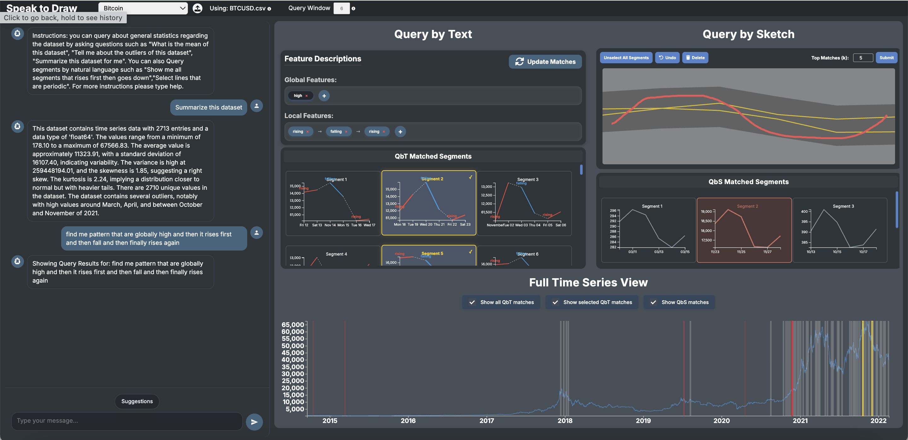

Speak-to-Draw — LLM-Powered Multimodal Querying for Time-Series Data
HCI · Visualization
SUBMITTED · EUROVIS 2026
- Built a multimodal time-series querying interface combining natural-language and sketch-based input for human-in-the-loop analysis.
- Implemented an LLM-driven pipeline that maps language to structured queries for coarse retrieval, with sketches refining local temporal patterns.